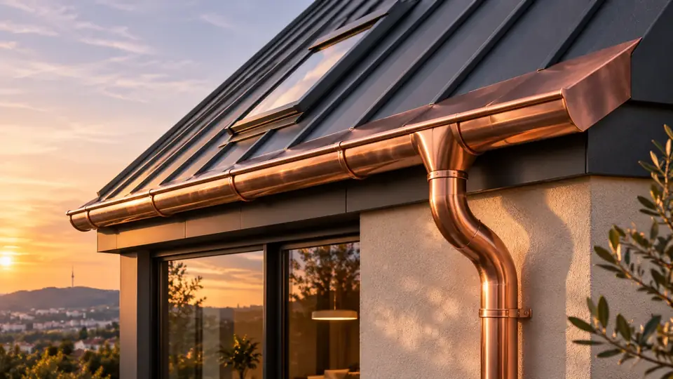

BAUFLASCHNEREI AUS STUTTGART
Metall.
In Form.
Bis ins Detail.
Metalldächer, Fassadenbekleidungen und Spenglerarbeiten – mit Gespür für Material, Funktion und architektonische Details.
des Unternehmens
Feuerbach
Entwässerung
Substanz.
Präzision.
Charakter.
Gute Metallarbeit fügt sich nicht nur in Architektur ein. Sie macht sie mit aus.
Die Wurzeln von Mayer Zeltwanger reichen bis ins Jahr 1982. Das Unternehmen aus Stuttgart-Feuerbach verbindet handwerkliche Metallbearbeitung mit Aufgaben rund um Dächer, Fassaden und anspruchsvolle bauliche Anschlüsse.
Über Ihr Vorhaben sprechenFür jedes Detail
die richtige Lösung.
Von großflächigen Metalldächern bis zum kleinen, entscheidenden Anschluss: Technik, die sichtbar überzeugt.
 01 / DACH
01 / DACHMetalldächer
 02 / FASSADE
02 / FASSADEFassaden & Gauben

03 / FUNKTIONDachentwässerung
Material ist
mehr als eine
Oberfläche.
Jedes Metall hat eine eigene Wirkung – optisch, handwerklich und im Zusammenspiel mit der Architektur.
Materialien & Anwendungen
Es sind die Details,
die das Ganze
ausmachen.
Ob Kaminverwahrung, Dachrand, Regenwasserführung oder Anschluss an historische Bausubstanz: Gerade an Übergängen ist sorgfältige Metallarbeit gefragt.
- 01Kaminverwahrungen und -bekleidungen
- 02Dachrandbekleidungen
- 03Spenglerarbeiten an historischen Gebäuden
Ein gutes Ergebnis
beginnt mit einem Gespräch.
Anfrage starten Verstehen
Was soll entstehen? Welche Funktion und welche Gestaltung sind gewünscht?
Planen
Materialien und handwerkliche Umsetzung werden auf die Aufgabe abgestimmt.
Ausführen
Aus der Planung wird ein Bauteil, in dem Form und Funktion zusammenkommen.
UNSER NÄCHSTES PROJEKT?
Ihre Idee.
Unsere Arbeit.
Sie planen Arbeiten an Dach, Fassade oder Entwässerung? Erzählen Sie uns davon.
Kontakt aufnehmen